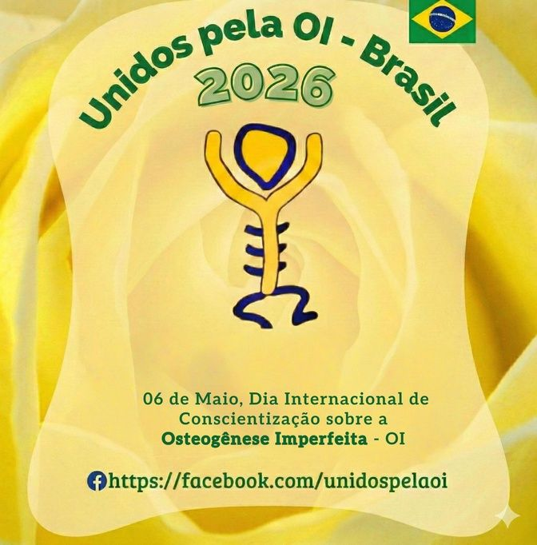

Unidos pela OI - Brasil

🎗️
06 de Maio — Dia Internacional de Conscientização sobre a Osteogênese Imperfeita - OI
Wishbone Day
O que você encontra aqui
Informações
Protocolos, medicações, PCDT/SUS e evidências científicas sobre OI.
Hub OI
Medicações
Pamidronato, Ácido Zoledrônico, Alendronato e terapias experimentais.
PCDT/SUS
Centros de Referência
CROIs e serviços especializados em OI no Brasil — onde buscar atendimento.
SUS
OI no Brasil
Panorama nacional: epidemiologia, políticas públicas e rede assistencial.
Brasil
OI no Mundo
Associações internacionais, pesquisas globais e terapias em desenvolvimento.
Internacional
Referências e Biblioteca
PCDT, artigos científicos, portarias e fontes primárias do Ministério da Saúde.
Científico